Lore · Divine Agents
The Dragonmarked Houses
A dragonmark is an intricate, living sigil that appears on the skin of certain bloodlines, granting subtle magical talents tied to a particular trade. The families built around these marks — the Dragonmarked Houses — took no side in the Last War, selling their services to all comers. That neutrality made them rich, and made them dangerous.
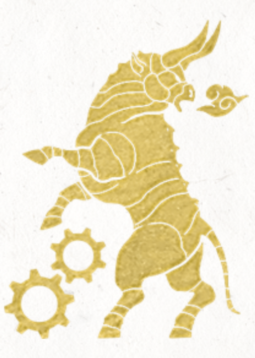
House Cannith
Headquarters Making, Cyre (before the Mourning); Cannith East — Korth Enclave, Korth, Karrnath; Cannith West — Aundair Enclave, Fairhaven, Aundair; Cannith South — Cannith Tower, Sharn, Breland.
Members of House Cannith are the premier artificers in Khorvaire, responsible for most of the technological advancement in the world. During the Last War, they developed the warforged for the Cyran army, though they profited from selling weapons to all sides of the conflict.
Known to the party None.
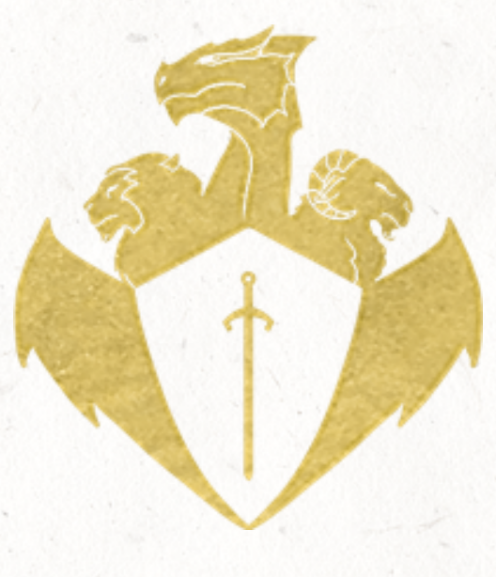
House Deneith
Headquarters Sentinel Tower, Karrlakton, Karrnath.
Members of House Deneith are the premier fighters in Khorvaire. The house keeps a standing force of mercenaries for hire. They do not take sides, merely working for those who hire them. They do, however, have a strict rule never to take up arms against a fellow member of the House.
Known to the party Keladry “Kel” d'Deneith; Orlan d'Deneith (disowned); Kasimir d'Deneith.
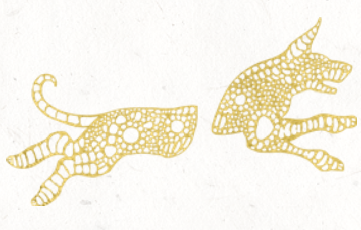
House Ghallanda
Headquarters Gatherhold, Talenta Plains; Sharn, Breland.
Members of House Ghallanda are renowned across Khorvaire for their hospitality. They are the proprietors of the Gold Dragon Inns found in most major cities across the continent. They also operate the Wandering Inn, which travels the countryside offering room and board to weary travelers.
Known to the party Isamira “Izzy” d'Ghallanda; Elwyn d'Ghallanda; Fayda d'Ghallanda; Korric Brighthollow ed'Ghallanda; Baron Yoran d'Ghallanda.
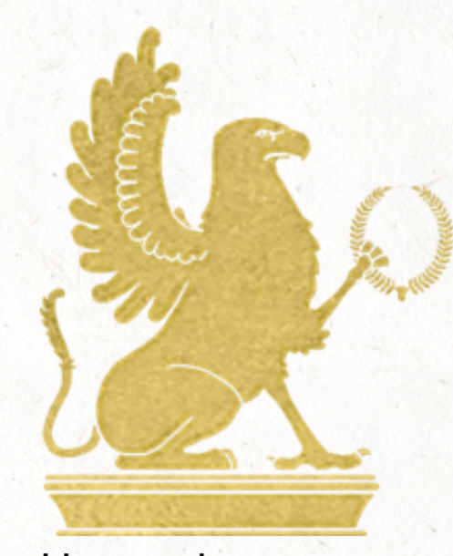
House Jorasco
Headquarters Vedykar Enclave, Vedykar, Karrnath.
Members of House Jorasco are the premier healers in Khorvaire. They provide medical services across the continent and are responsible for making most of the healing potions sold in major cities. During the Last War, every military unit had at least one member of House Jorasco employed as a medic.
Known to the party Katija d'Jorasco; Ulara d'Jorasco.
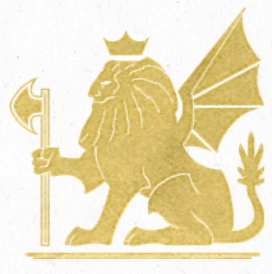
House Kundarak
Headquarters Korunda Gate, Mror Holds.
The members of House Kundarak excel in matters of security and protective magic. They are hired to provide security alongside members of House Deneith, as well as the construction of safes, vaults, and prisons across Khorvaire. Most of their works are thoroughly imbued with abjurative spells.
Known to the party None.
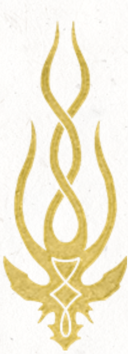
House Lyrandar
Headquarters Stormhome, Aundair.
House Lyrandar is made up of the greatest shipwrights in Khorvaire. Their creations, powered by Khyber dragonshards infused with lightning elementals, can traverse the seas and the skies with ease. They also have a degree of control over the weather and are often hired to give travelers easy journeys.
Known to the party None.
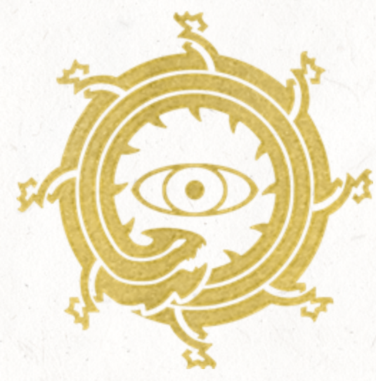
House Medani
Headquarters Wroat, Breland.
Members of House Medani specialize in divinatory magic. They have little interest in the power struggles and politics among the dragonmarked houses. They prefer to work with law enforcement and as bodyguards or detectives, helping communities rather than gaining raw profit.
Known to the party None.
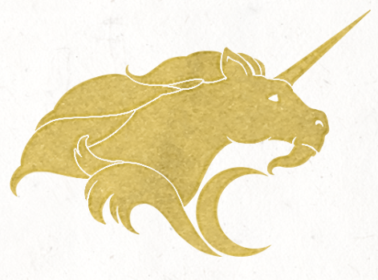
House Orien
Headquarters Passage, Aundair.
House Orien is responsible for land transportation across Khorvaire, specifically the lightning rail system. They are also heavily involved in postal services, and their talents with teleportation magic make them excellent couriers.
Known to the party None.
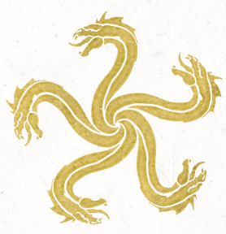
House Phiarlan
Headquarters No central headquarters.
Little is known about this secretive house of spies and assassins, other than their feud with House Thuranni, who recently split from their house in the Shadow Schism.
Known to the party None.
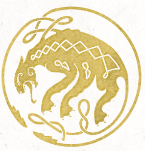
House Thuranni
Headquarters Regalport, Lhazaar Principalities.
Little is known about this secretive house of spies and assassins, other than their feud with House Phiarlan, from whom they recently split in the Shadow Schism. Rumor has it their leader was recently brutally killed in his own demiplanar laboratory — assassins from House Phiarlan are the suspected culprits.
Known to the party Baron Elar d'Thuranni (deceased).
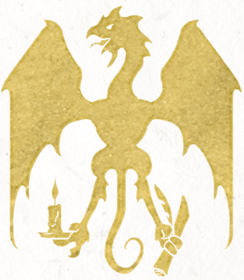
House Sivis
Headquarters Korranberg, Zilargo.
House Sivis operates the network of speaking stones across Khorvaire. They jealously guard their process of creating these speaking stones from Siberys dragonshards, which remains a mystery to anyone outside of the family.
Known to the party None.
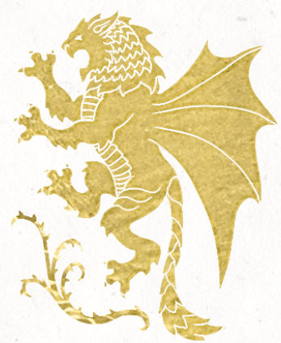
House Tharashk
Headquarters Zarash'ak, Shadow Marches.
Members of House Tharashk naturally find work as inquisitives and bounty hunters due to their magical tracking abilities. They are also heavily invested in the prospecting of the Eberron dragonshards that are abundant in the Shadow Marches.
Known to the party Avrok “Skullcleaver” d'Tharashk.
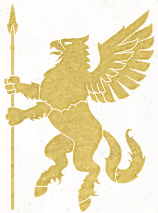
House Vadalis
Headquarters Foalswood, Varna, Eldeen Reaches.
Members of House Vadalis are naturally inclined toward nature. They are one of the least powerful and influential houses, but they generally don't care, content to breed and train beasts for a wide range of purposes. It's rumored that, using dragonshards, they've been able to create new magical creatures through a process known as magebreeding.
Known to the party None.
House Vol
Headquarters Extinct house — no headquarters.
Members of House Vol were accomplished necromancers, which drew the ire of the Church of the Silver Flame. They were labeled as heretics and wiped out in a crusade led by the paladin Tira Miron. Worship of their lost bloodline cropped up centuries later in the form of the Blood of Vol, who believe a messianic figure from the bloodline of Vol will ascend and conquer Khorvaire.
Known to the party None.